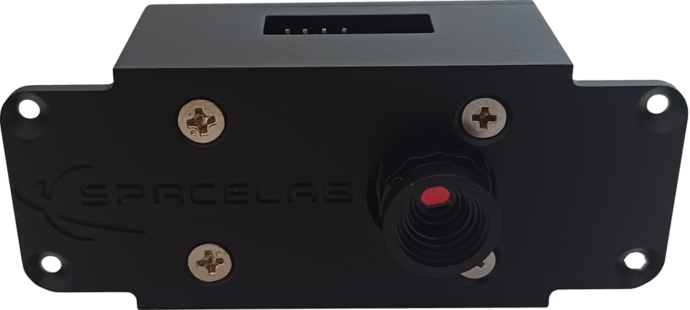

Overview
The SLCam is a compact camera payload developed by SpaceLab at the Federal University of Santa Catarina (UFSC) for nanosatellite and embedded imaging applications. The primary objective of the module is to capture images of the Earth from orbit, providing a low-cost and modular imaging solution suitable for CubeSat-class missions and technology demonstration platforms. The SLCam project also represents the first SpaceLab payload specifically designed around camera-based image acquisition systems. A picture of the camera module can be seen in Fig. 1.
{kind=link}

Fig. 1 SLCam.
The payload architecture is divided into two main subsystems: the image sensor module and the camera controller board. The imaging subsystem is based on the Arducam Mini 2MP Plus module, which integrates the OV2640 image sensor and onboard FIFO memory for image buffering. The controller board, built around the STM32F103C8T6 microcontroller, is responsible for image acquisition control, communication management, data storage, and system supervision. The module also includes external NOR Flash memory for image storage and supports both SPI and CAN interfaces for communication and image transfer.
From the software perspective, the SLCam firmware is organized using a layered architecture based on FreeRTOS, separating low-level hardware abstraction, peripheral drivers, device management, and application tasks. The firmware also incorporates software validation mechanisms such as static analysis, unit testing, and hardware integration testing, contributing to the reliability and maintainability of the system. Automated verification workflows are executed through GitHub Actions, enabling continuous integration and validation of the firmware throughout the development process.
Mechanically, the payload was designed as a compact and lightweight module suitable for constrained satellite platforms. The controller PCB uses a four-layer FR-4 stack-up and integrates all the required interfaces for programming, debugging, control, and data transfer. Together, the hardware, firmware, mechanical, and software components form a complete imaging payload platform intended for research, educational, and experimental space missions.
Specifications
The SLCam is a compact imaging payload designed for nanosatellite and embedded applications. The module integrates the Arducam Mini 2MP Plus image sensor together with a dedicated controller board based on the STM32F103C8T6 ARM Cortex-M3 microcontroller operating at 72 MHz. The system also includes external NOR Flash memory for non-volatile image storage and supports multiple communication interfaces for control, debugging, and programming purposes.
The main specifications of the SLCam module are available in Table 1.
Parameter |
Value |
|---|---|
Sensor type |
RGB |
Image Sensor |
OV2640 |
Pixel size |
2.2 \(\times\) 2.2 \(\mu\) m |
Max. Resolution |
1600 \(\times\) 1200 px |
Shutter |
Rolling Shutter |
Field of View (FoV) |
\(68^{\circ}\) (6 mm) (TBC) |
Processor |
STM32 ARM Cortex-M3 |
Storage |
16 MB (Flash NOR) |
Power Supply |
3V3 @ 140 mA (TBC) |
Control/Data Interface |
SPI and/or CAN |
Debug Interface |
UART |
Programming |
JTAG |
Operating System |
FreeRTOS |
Dimensions |
54.0 \(\times\) 26.1 \(\times\) 34.1 mm (main core)
82.2 \(\times\) 34.8 \(\times\) 34.1 mm (envelope)
|
Weight |
67 g |
Product tree
The product tree of the SLCam payload can be divided into five branches: hardware, firmware, mechanical, software and documentation. A diagram of the product tree is available in Fig. 2.
{kind=link}
Fig. 2 Product tree of the SLCam Payload.
Each branch and element of the product tree are described in the next chapters of this documentation.